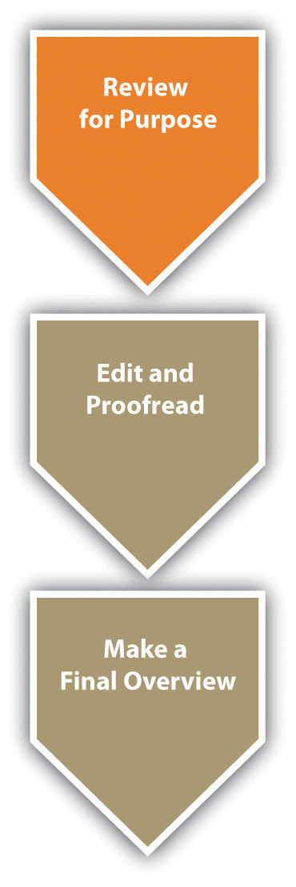

Although you will naturally be reviewing for purposeConducting a complete examination of all aspects of your statement of purpose (voice, audience, message, tone, attitude, and reception) once you have written a complete first draft. throughout the entire writing process, you should read through your first complete draft once you have finished it and carefully reconsider all aspects of your essay. As you review for purpose, keep in mind that your paper has to be clear to others, not just to you. Try to read through your paper from the point of view of a member of your targeted audience who is reading your paper for the first time. Make sure you have neither failed to clarify the points your audience will need to have clarified nor overclarified the points your audience will already completely understand.
Figure 8.1
Self-questioningPosing questions during the review process that you intend to answer yourself. is a useful tool when you are in the reviewing process. In anticipation of attaching a writer’s memo to your draft as you send it out for peer or instructor review, reexamine the six elements of the triangle that made up your original statement of purpose (voice, audience, message, tone, attitude, and reception):
In many situations, you will be required to have at least one of your peers review your essay (and you will, in turn, review at least one peer’s essay). Even if you’re not required to exchange drafts with a peer, it’s simply essential at this point to have another pair of eyes, so find a classmate or friend and ask them to look over your draft. In other cases, your instructor may be intervening at this point with ungraded but evaluative commentary on your draft. Whatever the system, before you post or trade your draft for review, use your answers to the questions in Section 8.1 "Reviewing for Purpose".1 to tweak your original statement of purpose, giving a clear statement of your desired voice, audience, message, tone, attitude, and reception. Also, consider preparing a descriptive outlineA plan for an essay written after the fact, describing its organization. showing how the essay actually turned out and comparing that with your original plan, or consider writing a brief narrative describing how the essay developed from idea to execution. Finally, include any other questions or concerns you have about your draft, so that your peer reader(s) or instructor can give you useful, tailored feedback. These reflective statements and documents could be attached with your draft as part of a writer’s memo. Remember, the more guidance you give your readers, regardless of whether they are your peers or your instructor, the more they will be able to help you.
When you receive suggestions for content changes from your instructors, try to put aside any tendencies to react defensively, so that you can consider their ideas for revisions with an open mind. If you are accustomed only to getting feedback from instructors that is accompanied by a grade, you may need to get used to the difference between evaluationCommentary from a peer or instructor usually unaccompanied by a grade. and judgmentCommentary from an instructor usually leading to a quantitative assessment (grade) of your work.. In college settings, instructors often prefer to intervene most extensively after you have completed a first draft, with evaluative commentary that tends to be suggestive, forward-looking, and free of a final quantitative judgment (like a grade). If you read your instructors’ feedback in those circumstances as final, you can miss the point of the exercise. You’re supposed to do something with this sort of commentary, not just read it as the justification for a (nonexistent) grade.
Sometimes peers think they’re supposed to “sound like an English teacher” so they fall into the trap of “correcting” your draft, but in most cases, the prompts used in college-level peer reviewing discourage that sort of thing. (For more on the peer reviewReading through text written by a classmate or colleague looking for any changes that could be made to improve the writing. process and for a list of Twenty Questions for Peer Review, see Chapter 11 "Academic Writing", Section 11.3 "Collaborating on Academic Writing Projects".) In many situations, your peers will give you ideas that will add value to your paper, and you will want to include them. In other situations, your peers’ ideas will not really work into the plan you have for your paper. It is not unusual for peers to offer ideas that you may not want to implement. Remember, your peers’ ideas are only suggestions, and it is your essay, and you are the person who will make the final decisions. If your peers happen to be a part of the audience to which you are writing, they can sometimes give you invaluable ideas. And if they’re not, take the initiative to find outside readers who might actually be a part of your audience.
When you are reviewing a peer’s essay, keep in mind that the author likely knows more about the topic than you do, so don’t question content unless you are certain of your facts. Also, do not suggest changes just because you would do it differently or because you want to give the impression that you are offering ideas. Only suggest changes that you seriously think would make the essay stronger.